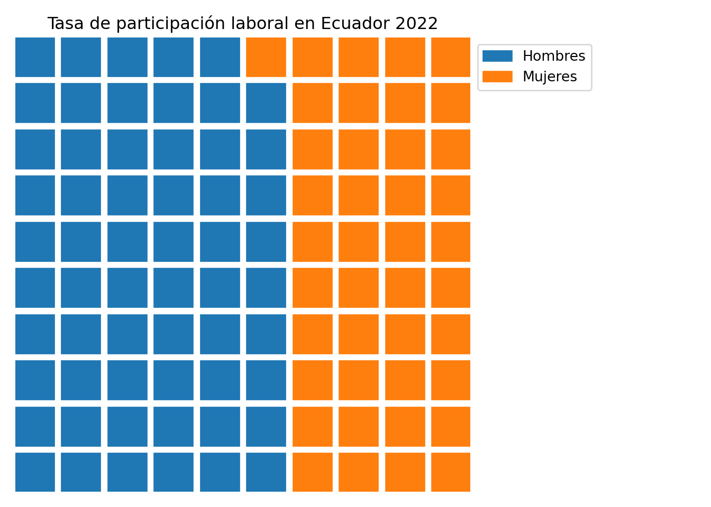

import pandas as pd
import holoviews as hv
from holoviews import opts
hv.extension('bokeh')
# Cargar el archivo de datos
file_path = 'Data/hdr-data.xlsx'
data = pd.read_excel(file_path)
# Seleccionar el año más reciente con datos completos
latest_year = data['year'].max()
# Filtrar el dataset para el año más reciente y el país "Ecuador"
filtered_data = data[(data['year'] == latest_year) & (data['country'] == 'Ecuador')]
# Seleccionar los indicadores de interés, excluyendo los indicadores que involucran hombres
indicators_of_interest = [
"Adolescent Birth Rate (births per 1,000 women ages 15-19)",
"Maternal Mortality Ratio (deaths per 100,000 live births)",
"Labour force participation rate, female (% ages 15 and older)",
"Population with at least some secondary education, female (% ages 25 and older)"
]
# Filtrar el dataset para los indicadores seleccionados
filtered_data = filtered_data[filtered_data['indicator'].isin(indicators_of_interest)]
# Crear una lista de relaciones en el formato (source, target, value)
relations = []
# Definir las relaciones basadas en los indicadores seleccionados
indicator_relations = [
("Adolescent Birth Rate (births per 1,000 women ages 15-19)",
"Labour force participation rate, female (% ages 15 and older)"),
("Maternal Mortality Ratio (deaths per 100,000 live births)",
"Labour force participation rate, female (% ages 15 and older)"),
("Population with at least some secondary education, female (% ages 25 and older)",
"Labour force participation rate, female (% ages 15 and older)")
]
# Calcular los valores promedio para cada relación en Ecuador
for source, target in indicator_relations:
source_value = filtered_data[filtered_data['indicator'] == source]['value'].mean()
target_value = filtered_data[filtered_data['indicator'] == target]['value'].mean()
# Usamos el promedio de los dos valores como intensidad de la relación
if not pd.isna(source_value) and not pd.isna(target_value):
relation_value = (source_value + target_value) / 2
relations.append((source, target, relation_value))
# Crear el gráfico de cuerda
chord = hv.Chord(relations).opts(
opts.Chord(
title="Relaciones de Indicadores de Género Femenino y Educación en Ecuador",
cmap='Category10',
edge_cmap='Category10',
labels='name',
node_color='index',
edge_color='value',
bgcolor='white',
edge_alpha=0.9,
edge_line_width=3,
width=800,
height=800,
show_legend=True
)
)
hv.save(chord, 'chord_plot.html', backend='bokeh')30DaysDavidBeltran
30 Days Challenge
Introducción
En este trabajo, se realiza un análisis detallado utilizando diversas técnicas de visualización de datos para explorar y comunicar patrones e información clave en diferentes conjuntos de datos. La visualización de datos permite transformar datos complejos en representaciones visuales claras y efectivas, facilitando la interpretación y toma de decisiones informadas.
Este trabajo fue realizado para la materia de Visualización de Datos y tiene como objetivo aplicar los conocimientos adquiridos en la creación de gráficos dinámicos, interactivos y responsivos utilizando herramientas.
Herramientas Utilizadas
Para el desarrollo de este proyecto, se han utilizado las siguientes herramientas y tecnologías:
Power BI: Para la creación de reportes interactivos y visualización de datos en forma de dashboards.
Python: Herramienta de análisis y manipulación de datos, facilitando la personalización y creación de gráficos.
Datawrapper: Plataforma utilizada para generar gráficos de fácil interpretación, especialmente para visualizaciones rápidas y personalizadas.
R con Quarto: R facilita la manipulación de datos y el diseño de gráficos complejos utilizando paquetes como ggplot2, que permite crear visualizaciones claras y detalladas para comunicar hallazgos de manera efectiva
Looker Studio: Para la creación de reportes y dashboards interactivos en la web, permitiendo la integración de diversas fuentes de datos.
Comparisons (Comparaciones)
Part-to-whole (Parte del todo)
Descripción: Este gráfico dinámico muestra la proporción de hombres y mujeres en los parlamentos de varios países, permitiendo seleccionar un año entre 1990 y 2022. Utiliza datos del Human Development Report y se basa en el Índice de Gender Inequality Index (GII) como referencia contextual para analizar la igualdad de género en la política.
Objetivo: Observar cómo variaba la representación de mujeres en puestos parlamentarios en diferentes regiones y culturas, resaltando la disparidad de género en el ámbito político, la visualización permite explorar por años.
Los datos fueron extraídos de Human Development Report.
Herramienta: PowerBi
Neo
Descripción: Este gráfico de cuerda visualiza las relaciones entre varios indicadores de género femenino y educación en Ecuador, basándose en datos del Human Development Report del año más reciente disponible. Los indicadores incluyen la tasa de natalidad adolescente, la tasa de mortalidad materna, la participación femenina en la fuerza laboral y el nivel de educación secundaria alcanzado por mujeres. La intensidad de cada conexión representa el promedio entre los valores de los indicadores conectados, destacando posibles correlaciones entre aspectos de salud, educación y empleo en la vida de las mujeres en Ecuador.
Objetivo: El objetivo de este Grafico es identificar posibles interrelaciones entre los indicadores de salud, educación y empleo en las mujeres ecuatorianas, facilitando la comprensión de cómo estos factores pueden influirse mutuamente. Esto puede ayudar a los responsables de políticas a identificar áreas clave para mejorar la igualdad de género y la calidad de vida de las mujeres en el país.
Los datos fueron extraídos de Human Development Report.
Herramienta: Holoviews con el backend de Bokeh en Python.
Makeover (Rediseño)
Descripción: Este gráfico de mapa dinámico muestra la distribución de género en los parlamentos de diversos países de América Latina, donde se representan las proporciones de hombres y mujeres en cada país mediante gráficos de pastel superpuestos en su ubicación geográfica. Los datos, extraídos del Human Development Report, permiten visualizar la representación de género en la política latinoamericana a lo largo del tiempo, con un filtro de años que permite seleccionar el periodo específico entre 1990 y 2022.
Objetivo: El objetivo de este Grafico es facilitar la comprensión reaciendo el grafico existente en Part-to-whole de la evolución de la representación femenina en los parlamentos de América Latina, promoviendo una mejor comprensión de las disparidades de género en la región. Esta perspectiva geoespacial permite identificar patrones y tendencias en la representación de género en el contexto político, destacando cambios y persistencias en diferentes periodos.
Los datos fueron extraídos de Human Development Report.
Herramienta: Power BI.
Waffle
Descripción: Este gráfico de waffle muestra la tasa de participación laboral en Ecuador para el año 2022, desglosada por género. La visualización permite observar la proporción de hombres y mujeres en la fuerza laboral, utilizando una representación en bloques para reflejar la contribución de cada grupo. Los datos provienen del Human Development Report y destacan la diferencia en la participación laboral entre géneros.
Objetivo: El objetivo de este gráfico es facilitar la comparación visual de la participación laboral entre hombres y mujeres en Ecuador, proporcionando una manera intuitiva de identificar la disparidad de género en el ámbito laboral. Este Grafico puede ayudar a los responsables de políticas y a investigadores a entender mejor las dinámicas de género en el mercado laboral ecuatoriano.
Los datos fueron extraídos de Human Development Report.
import pandas as pd
from pywaffle import Waffle
import matplotlib.pyplot as plt
import mpld3
# Cargar los datos desde el archivo
file_path = 'Data/hdr-data.xlsx'
data = pd.read_excel(file_path)
# Filtrar el dataset para obtener los datos de Ecuador y los indicadores específicos
ecuador_data = data[(data['country'] == 'Ecuador') &
(data['indicator'].isin(['Labour force participation rate, male (% ages 15 and older)',
'Labour force participation rate, female (% ages 15 and older)']))]
# Seleccionar el año más reciente con datos
data_fitrada = ecuador_data[ecuador_data['year'] == 2022]
# Obtener los valores de participación laboral masculina y femenina
masculina = data_fitrada[data_fitrada['indicator'] == 'Labour force participation rate, male (% ages 15 and older)']['value'].values[0]
femenina = data_fitrada[data_fitrada['indicator'] == 'Labour force participation rate, female (% ages 15 and older)']['value'].values[0]
# Normalizar los valores para que sumen 100%
total_participation = masculina + femenina
porcentaje_m = (masculina / total_participation) * 100
porcentaje_f = (femenina / total_participation) * 100
# Crear el gráfico de waffle
fig = plt.figure(
FigureClass=Waffle,
rows=10,
values={'Hombres': porcentaje_m, 'Mujeres': porcentaje_f},
colors=["#1f77b4", "#ff7f0e"],
title={'label': f'Tasa de participación laboral en Ecuador 2022', 'loc': 'center'},
labels=["Hombres", "Mujeres"],
legend={'loc': 'upper left', 'bbox_to_anchor': (1, 1)}
)
plt.show()
Herramienta: Python con la librería pywaffle y matplotlib.
Diverging (Divergente)
Descripción: Este gráfico muestra la tasa de mortalidad materna en varios países de América Latina, comparando los valores del año 2000 y del año 2020. La métrica utilizada es el número de muertes maternas por cada 100,000 nacidos vivos. Este Grafico permite observar cambios significativos en los niveles de mortalidad materna a lo largo de dos décadas, destacando los avances o retrocesos en la región. Los datos provienen del Human Development Report, proporcionando un contexto sobre las condiciones de salud materna en cada país.
Objetivo: El objetivo de este Grafico es evidenciar las variaciones en la mortalidad materna entre el año 2000 y el 2020 en América Latina, resaltando los países que han logrado avances en la reducción de esta tasa y aquellos donde los cambios han sido menores. Este análisis ayuda a identificar áreas donde se necesitan intervenciones más fuertes para mejorar la salud materna en la región.
Los datos fueron extraídos de Human Development Report.
Herramienta: Power BI.
OECD (Día de datos de la OCDE)
Descripción: Este gráfico dinámico presenta la proporción de empleadores en relación con el empleo total en varios países de América Latina, permitiendo seleccionar un año entre 1991 y 2022. La métrica utilizada es el porcentaje de empleadores sobre el total de la fuerza laboral en cada país, lo que permite comparar el nivel de participación empresarial en el mercado laboral latinoamericano. Los datos se obtuvieron en el marco del Día de Datos de la OCDE, proporcionando un contexto de análisis sobre el perfil empresarial en la región.
Objetivo: El objetivo de este Grafico es identificar la variación en la proporción de empleadores entre los países de América Latina, lo que ofrece una visión sobre el entorno empresarial y la participación de empleadores en la estructura laboral. Esta información es valiosa para analizar el nivel de emprendimiento y las dinámicas del mercado laboral en distintos países de la región.
Los datos fueron extraídos de World Bank Open Data.
Herramienta: Power BI.
Distributions (Distribuciones)
Hazards (Peligros)
Descripción: Este mapa global representa el número de muertes por accidentes de tránsito en 2021, utilizando datos de la Organización Mundial de la Salud (OMS). Cada país está coloreado en función del rango de muertes registradas, donde los tonos oscuros indican un mayor número de fallecimientos y los tonos claros representan cifras menores. Este mapa ilustra las variaciones en mortalidad por accidentes de tránsito en diferentes regiones, proporcionando una perspectiva visual sobre los peligros asociados al transporte en cada país.
Objetivo: El objetivo de este Grafico es destacar las disparidades globales en la mortalidad por accidentes de tránsito, identificando áreas donde estos incidentes representan un riesgo más significativo para la salud pública. Esto permite a los investigadores y a los responsables de políticas enfocarse en mejorar la seguridad vial en regiones con alta incidencia de mortalidad.
Los datos fueron extraídos de World Health Organization.
Herramienta: Datawrapper.
Circular
Descripción: Este gráfico de barras semicircular muestra la tasa de infección por VIH por cada 1,000 personas en distintas regiones del mundo, destacando las diferencias en la prevalencia del VIH entre regiones. Los colores específicos representan cada región: África, Américas, Mediterráneo Oriental, Europa, Sudeste Asiático y Pacífico Occidental. Los datos resaltan la carga desproporcionada del VIH en ciertas regiones, especialmente en África.
Objetivo: El objetivo de este Grafico es proporcionar una comparación clara de la prevalencia del VIH en diversas regiones globales, identificando áreas de mayor incidencia. Este enfoque permite visualizar de manera efectiva la desigualdad en la distribución de infecciones de VIH y resalta las regiones que pueden necesitar una mayor atención en términos de prevención y tratamiento.
Los datos fueron extraídos de https://data.who.int/.
# install.packages("ggplot2")
# Cargar librerías necesarias
library(readr)
library(dplyr)
Attaching package: 'dplyr'The following objects are masked from 'package:stats':
filter, lagThe following objects are masked from 'package:base':
intersect, setdiff, setequal, unionlibrary(ggplot2)
# Leer el dataset
HIV_infections_h_m <- read_csv("Data/HIV infections h-m.csv")Rows: 14801 Columns: 15── Column specification ────────────────────────────────────────────────────────
Delimiter: ","
chr (11): IND_ID, IND_CODE, IND_UUID, IND_PER_CODE, DIM_TIME_TYPE, DIM_GEO_C...
dbl (4): DIM_TIME, RATE_PER_1000_N, RATE_PER_1000_NL, RATE_PER_1000_NU
ℹ Use `spec()` to retrieve the full column specification for this data.
ℹ Specify the column types or set `show_col_types = FALSE` to quiet this message.# Filtrar los datos para usar solo las filas donde DIM_GEO_CODE_TYPE es "WHOREGION" y DIM_SEX es "TOTAL"
filtered_data <- HIV_infections_h_m %>%
filter(DIM_GEO_CODE_TYPE == "WHOREGION", DIM_SEX == "TOTAL") %>%
select(GEO_NAME_SHORT, RATE_PER_1000_N)
# Colores específicos para cada región
custom_colors <- c(
"Africa" = "#D73027", # Rojo para África
"Americas" = "#FC8D59", # Naranja para Américas
"Eastern Mediterranean" = "#FEE08B", # Amarillo para Mediterráneo Oriental
"Europe" = "#91BFDB", # Azul para Europa
"South-East Asia" = "#4575B4", # Azul para Sudeste Asiático
"Western Pacific" = "#542788" # Morado para Pacífico Occidental
)
# Crear gráfico de barras semicircular
ggplot(filtered_data, aes(x = reorder(GEO_NAME_SHORT, RATE_PER_1000_N), y = RATE_PER_1000_N, fill = GEO_NAME_SHORT)) +
geom_bar(stat = "identity") +
coord_polar(theta = "y", start = -pi / 2) +
ylim(0, 100) + # Establece el límite máximo en 100
theme_void() +
theme(
axis.text.x = element_text(size = 10, face = "bold", angle = 90, hjust = 1),
plot.title = element_text(hjust = 0.5, face = "bold")
) +
labs(
title = "La tasa de infección por VIH por cada 1,000 personas por Región",
fill = "Región" # Cambia el nombre de la leyenda a "Región"
) +
scale_fill_manual(values = custom_colors) Herramienta: R con ggplot2.
Major/minor (Mayor/menor)
Descripción: Este gráfico de lollipop muestra la tasa de suicidios por cada 100,000 personas, desglosada por género y por grupo de economías en función de los ingresos (altos, medios-altos, medios-bajos y bajos). La visualización destaca las diferencias en la tasa de suicidios entre hombres y mujeres en diferentes contextos económicos, con colores diferenciados para cada género (rosa para mujeres y azul para hombres). Este gráfico ilustra cómo los factores económicos pueden influir en la tasa de suicidios de manera diferenciada entre géneros.
Objetivo: El objetivo de este Grafico es analizar la disparidad en la tasa de suicidios entre hombres y mujeres en función del contexto económico, proporcionando una perspectiva sobre cómo la economía y el género pueden estar relacionados con la salud mental y el riesgo de suicidio. Este enfoque permite identificar patrones específicos que pueden ser útiles para las políticas de salud pública.
Los datos fueron extraídos de World Health OrganizationData.
# install.packages("dplyr")
library(dplyr)
library(readr)
# Cargar el dataset
suicide_deaths <- read_csv("Data/Suicide deaths.csv")Rows: 17518 Columns: 16
── Column specification ────────────────────────────────────────────────────────
Delimiter: ","
chr (12): IND_ID, IND_CODE, IND_UUID, IND_PER_CODE, DIM_TIME_TYPE, DIM_GEO_C...
dbl (4): DIM_TIME, RATE_PER_100000_N, RATE_PER_100000_NL, RATE_PER_100000_NU
ℹ Use `spec()` to retrieve the full column specification for this data.
ℹ Specify the column types or set `show_col_types = FALSE` to quiet this message.# Filtrar y seleccionar las columnas deseadas
filtered_data <- suicide_deaths %>%
filter(DIM_GEO_CODE_TYPE == "WORLDBANKINCOMEGROUP", DIM_SEX %in% c("MALE", "FEMALE"), DIM_TIME == 2019) %>%
select(DIM_GEO_CODE_TYPE, RATE_PER_100000_N, GEO_NAME_SHORT, DIM_SEX)
# install.packages("ggplot2")
library(ggplot2)
# Crear el gráfico de lollipop
ggplot(filtered_data, aes(x = GEO_NAME_SHORT, y = RATE_PER_100000_N, color = DIM_SEX)) +
geom_segment(aes(x = GEO_NAME_SHORT, xend = GEO_NAME_SHORT, y = 0, yend = RATE_PER_100000_N),
size = 2) + # Grosor de las líneas
geom_point(size = 6) + # Tamaño de los puntos
geom_text(aes(label = round(RATE_PER_100000_N, 1)),
vjust = -1, size = 4, fontface = "bold") +
scale_color_manual(values = c("FEMALE" = "pink", "MALE" = "blue"),
labels = c("FEMALE" = "MUJER", "MALE" = "HOMBRE")) +
scale_x_discrete(labels = c(
"Upper-middle-income economies" = "Economías de\ningresos\nmedios-altos",
"Low-income economies" = "Economías de\ningresos bajos",
"High-income economies" = "Economías de\ningresos altos",
"Lower-middle-income economies" = "Economías de\ningresos\nmedios-bajos"
)) + # Cambia etiquetas de las economías y divide en líneas
labs(title = "Lollipop Chart de Tasa de Suicidios por Género",
x = "Grupo de Economías", y = "Tasa por 100,000") +
theme_minimal() +
theme(
axis.text.x = element_text(angle = 0, hjust = 0.5, size = 8),
plot.margin = margin(t = 20, r = 10, b = 10, l = 10)
) +
facet_wrap(~ DIM_SEX, labeller = as_labeller(c("FEMALE" = "MUJER", "MALE" = "HOMBRE"))) Warning: Using `size` aesthetic for lines was deprecated in ggplot2 3.4.0.
ℹ Please use `linewidth` instead.Herramienta: R con ggplot2.
Physical (Físico)
Descripción: Este gráfico de líneas muestra la evolución de la esperanza de vida en distintas regiones del mundo entre los años 2000 y 2021. Cada línea representa una región específica (Pacífico Occidental, Europa, Américas, Sudeste Asiático, Mediterráneo Oriental y África) y sigue la tendencia de la esperanza de vida a lo largo del tiempo. Los datos revelan cómo las condiciones de vida, la atención sanitaria y otros factores han afectado la longevidad en cada región.
Objetivo: El objetivo de este Grafico es comparar la evolución de la esperanza de vida en diversas regiones globales, destacando las disparidades y tendencias en la longevidad. Este análisis permite identificar las regiones donde la esperanza de vida ha mejorado y aquellas donde los desafíos persisten, proporcionando información valiosa para el desarrollo de políticas de salud y calidad de vida.
Los datos fueron extraídos de World Health Organization.
Herramienta: Looker Studio.
Mobile-friendly
Descripción: Esta tabla visual muestra la cantidad de personas que viven con tuberculosis en distintos países entre los años 2020 y 2022. Cada columna representa un año (2020, 2021 y 2022), y cada fila corresponde a un país. Los datos están organizados para facilitar la comparación entre los tres años, destacando los cambios en la prevalencia de tuberculosis en cada país. La información ha sido obtenida de la Organización Mundial de la Salud (OMS).
Objetivo: El objetivo de este Grafico es rastrear la evolución de la prevalencia de tuberculosis en varios países a lo largo de tres años, permitiendo identificar tendencias y cambios significativos. Este análisis es crucial para entender cómo la tuberculosis se ha comportado en diferentes regiones y evaluar la efectividad de las políticas de salud pública en la lucha contra esta enfermedad.
Los datos fueron extraídos de World Health Organization.
Herramienta: Datawrapper.
Reuters Graphics (Día temático de Reuters)
Descripción: Este gráfico muestra la evolución de las emisiones anuales de CO₂ (en toneladas métricas) entre 1990 y 2020 para Colombia, Ecuador, Perú y España. Se han añadido sombreado para señalar dos periodos de crisis global: la crisis financiera de 2008-2009 y la pandemia de COVID-19 en 2020-2021, lo que permite analizar cómo estos eventos impactaron en las emisiones. Además, se incluye una línea horizontal punteada que representa el promedio de emisiones en los cuatro países.
Objetivo: El objetivo de este Grafico es comparar las tendencias de emisiones de CO₂ en diferentes países de América Latina y Europa, resaltando cómo eventos económicos y sanitarios globales afectan los niveles de emisión. Este análisis puede servir para evaluar los efectos de las crisis en la reducción o incremento de emisiones y proporcionar una perspectiva sobre los esfuerzos en mitigación de cambio climático.
Los datos fueron extraídos de Our World in Data.
# Cargar las librerías necesarias
library(ggplot2)
library(readr)
library(dplyr)
library(scales)
Attaching package: 'scales'The following object is masked from 'package:readr':
col_factor# Cargar el archivo CSV
annual_co2_emissions_per_country <- read_csv("Data/annual-co2-emissions-per-country.csv")Rows: 30308 Columns: 4── Column specification ────────────────────────────────────────────────────────
Delimiter: ","
chr (2): Entity, Code
dbl (2): Year, Annual CO₂ emissions
ℹ Use `spec()` to retrieve the full column specification for this data.
ℹ Specify the column types or set `show_col_types = FALSE` to quiet this message.# Filtrar por los países específicos y seleccionar solo las columnas necesarias desde el año 1990 en adelante
filtered_data <- annual_co2_emissions_per_country %>%
filter(Entity %in% c("Ecuador", "Colombia", "Peru", "Spain"), Year >= 1990) %>%
select(Entity, Year, `Annual CO₂ emissions`)
# Calcular el promedio de emisiones entre los países para cada año
average_emissions <- filtered_data %>%
group_by(Year) %>%
summarise(mean_emission = mean(`Annual CO₂ emissions`, na.rm = TRUE))
# Crear el gráfico de líneas con sombreado y etiquetas para los periodos específicos
ggplot(filtered_data, aes(x = Year, y = `Annual CO₂ emissions`, color = Entity)) +
# Agregar sombreado para la crisis financiera de 2008 (2008-2009)
annotate("rect", xmin = 2008, xmax = 2009, ymin = -Inf, ymax = Inf,
fill = "gray", alpha = 0.2) +
# Agregar sombreado para la pandemia de COVID-19 (2020-2021)
annotate("rect", xmin = 2020, xmax = 2021, ymin = -Inf, ymax = Inf,
fill = "gray", alpha = 0.2) +
# Dibujar las líneas de los países sobre el sombreado
geom_line(size = 1) +
# Agregar una línea horizontal punteada con el promedio de emisiones
geom_hline(aes(yintercept = mean(mean_emission)),
data = average_emissions,
linetype = "dotted", color = "black") +
# Etiqueta para la línea de promedio justo encima de la línea
annotate("text", x = 1995, y = mean(average_emissions$mean_emission) * 1.1,
label = paste("Promedio:", scales::comma(mean(average_emissions$mean_emission))),
color = "black", size = 4, hjust = 0) +
# Agregar etiquetas horizontales de los periodos sombreados con negrilla
annotate("text", x = 2004, y = max(filtered_data$`Annual CO₂ emissions`)*1.05,
label = "Crisis Financiera 2008", color = "gray30", size = 4, hjust = 0.5, fontface = "bold") +
annotate("text", x = 2016.5, y = max(filtered_data$`Annual CO₂ emissions`)*1.05,
label = "Pandemia COVID-19", color = "gray30", size = 4, hjust = 0.5, fontface = "bold") +
labs(
title = "Evolución de las Emisiones de CO2 (1990-2020)",
subtitle = "Comparación entre Colombia, Ecuador, Perú y España",
x = "Año",
y = "Emisiones anuales de CO2 (toneladas métricas)",
color = "País"
) +
scale_y_continuous(labels = comma, expand = expansion(mult = c(0, 0.2))) +
theme_minimal() +
theme(
plot.title = element_text(hjust = 0.5, face = "bold"),
plot.subtitle = element_text(hjust = 0.5),
axis.title.x = element_text(face = "bold"),
axis.title.y = element_text(face = "bold"),
legend.position = "bottom"
) +
guides(color = guide_legend(nrow = 1))Herramienta: R con ggplot2.
Relationships (Relaciones)
Family (Familia)
Descripción: Este gráfico de red muestra los lazos familiares de las casas en la serie Juego de Tronos, visualizando las conexiones entre los miembros de cada familia y sus relaciones. Cada nodo representa un miembro de la familia, mientras que las líneas conectan a los individuos con sus familiares directos (padres, hijos, hermanos). La interfaz permite seleccionar cualquier casa para explorar diferentes conexiones familiares en el universo de la serie.
Objetivo: El objetivo de este Grafico es explorar las relaciones familiares en Juego de Tronos, permitiendo al usuario seleccionar una casa a la vez para analizar sus vínculos internos y conexiones con los miembros de esa familia específica. Esta representación facilita la comprensión de las dinámicas familiares de la serie, ofreciendo a los fanáticos una herramienta visual para examinar las interacciones y relaciones entre los personajes de cada casa en el universo de Juego de Tronos.
Los datos fueron extraídos de ChatGPT en el cual se pidio Árbol genealógico de Game of Thrones EN CSV. Los datos fueron solicitados a ChatGPT en formato CSV con la informacion de sus relaciones familiares de Game of Thrones.
Herramienta: Power BI.
Heatmap (Mapa de calor)
Descripción: Este mapa de calor muestra la correlación entre diversos factores sociales y académicos de estudiantes, incluyendo variables como tiempo de estudio, fracaso escolar, relación familiar, tiempo libre, y consumo de alcohol. Cada celda representa el coeficiente de correlación entre dos variables, con colores que indican la intensidad y dirección de la relación (positivo o negativo). Los tonos más rojos indican una correlación positiva más fuerte, mientras que los tonos azules representan correlaciones negativas.
Objetivo: El objetivo de este Grafico es identificar posibles relaciones entre factores sociales y académicos en los estudiantes, proporcionando una comprensión de cómo ciertos hábitos y relaciones pueden influir en el rendimiento académico. Este análisis puede ser útil para diseñar intervenciones orientadas a mejorar el éxito académico mediante el enfoque en factores sociales.
Los datos fueron extraídos de UC Irvine Machine Learning Repository.
library(readr)
student_mat <- read_delim("Data/student-mat.csv", delim = ";", escape_double = FALSE, trim_ws = TRUE)Rows: 395 Columns: 33
── Column specification ────────────────────────────────────────────────────────
Delimiter: ";"
chr (17): school, sex, address, famsize, Pstatus, Mjob, Fjob, reason, guardi...
dbl (16): age, Medu, Fedu, traveltime, studytime, failures, famrel, freetime...
ℹ Use `spec()` to retrieve the full column specification for this data.
ℹ Specify the column types or set `show_col_types = FALSE` to quiet this message.# Cargar las librerías necesarias
library(ggplot2)
library(reshape2)
library(dplyr)
# Filtra solo las columnas de interés para el análisis
student_selected <- student_mat %>% select(studytime, failures, famrel, freetime, goout, Dalc, Walc)
# Calcula la matriz de correlación
corr_matrix <- cor(student_selected, use = "complete.obs")
# Convierte la matriz en formato largo para ggplot2
corr_melt <- reshape2::melt(corr_matrix)
# Cambia los nombres de las variables a etiquetas más descriptivas
labels <- c("studytime" = "Tiempo de \nEstudio", "failures" = "Fracaso \nEscolar",
"famrel" = "Relación \nFamiliar", "freetime" = "Tiempo Libre",
"goout" = "Salir con \nAmigos", "Dalc" = "Alcohol entre \nSemana",
"Walc" = "Alcohol en \nFin de Semana")
corr_melt$Var1 <- factor(corr_melt$Var1, levels = names(labels), labels = labels)
corr_melt$Var2 <- factor(corr_melt$Var2, levels = names(labels), labels = labels)
# Crea el mapa de calor con etiquetas, títulos y estética personalizada
ggplot(data = corr_melt, aes(x = Var1, y = Var2, fill = value)) +
geom_tile(color = "white") +
scale_fill_gradient2(low = "blue", high = "red", mid = "white", midpoint = 0,
limit = c(-1, 1), name = "Correlación") +
geom_text(aes(label = round(value, 2)), color = "black", size = 3) +
theme_minimal() +
theme(axis.text.x = element_text(angle = 0, hjust = 0.5, vjust = 0.5, size = 10),
axis.text.y = element_text(angle = 0, vjust = 0.5, hjust = 1, size = 10),
axis.title.x = element_text(size = 12, face = "bold"),
axis.title.y = element_text(size = 12, face = "bold"),
plot.title = element_text(size = 14, face = "bold", hjust = 0.5),
legend.title = element_text(size = 10),
legend.text = element_text(size = 8)) +
labs(title = "Mapa de Calor de Correlación entre Factores Sociales y Académicos",
x = "Variables", y = "Variables")Herramienta: R con ggplot2.
Historical (Histórico)
Descripción: Este gráfico de línea muestra la evolución de la tasa de suicidios (por cada 100,000 personas) desde el año 2000 hasta 2019. La línea azul representa la tasa anual de suicidios, mientras que la línea horizontal punteada muestra la media de toda la serie (10.42). La visualización permite observar la tendencia a la baja en la tasa de suicidios a lo largo de los años, con la opción de filtrar por año y región.
Objetivo: El objetivo de este Grafico es analizar las tendencias en la tasa de suicidios a nivel global o regional en un periodo de casi dos décadas. Este análisis permite identificar si existen patrones de disminución o aumento, proporcionando información útil para entender y abordar los factores que influyen en la salud mental a lo largo del tiempo.
Los datos fueron extraídos de Our World in Data.
Herramienta: Looker Studio.
Weather (Clima)
Descripción: Este mapa de calor global muestra la precipitación promedio en milímetros durante el periodo 1990-1995. Utilizando una escala de color que va de tonos morados a verdes, el mapa destaca las áreas con diferentes niveles de precipitación. Las zonas en amarillo representan niveles más altos de precipitación, mientras que los tonos morados indican niveles más bajos. Este mapa proporciona una visualización de los patrones de precipitación a nivel mundial.
Objetivo: El objetivo de este Grafico es analizar la distribución de la precipitación promedio en el mundo durante un periodo específico, permitiendo identificar regiones con mayores o menores niveles de lluvia. Esta información es útil para estudios de clima y geografía, así como para comprender los patrones de precipitación en diversas áreas geográficas.
Los datos fueron extraídos de Nasa.
import xarray as xr
import matplotlib.pyplot as plt
import cartopy.crs as ccrs
import cartopy.feature as cfeature
import seaborn as sns
# Cargar el archivo NetCDF
file_path = 'Data/precip1850-1995.nc'
ds = xr.open_dataset(file_path)
# Seleccionar los años de interés y calcular el promedio en el tiempo (año y mes)
precip_data = ds['precip'].sel(year=slice(1990, 1995), month=slice(1, 12)).mean(dim=['year', 'month'])
# Crear la figura y el mapa de proyección usando Cartopy
fig, ax = plt.subplots(figsize=(16, 10), subplot_kw={'projection': ccrs.PlateCarree()})
ax.set_global() # Configura el mapa para que se ajuste a la vista global
ax.coastlines() # Añade las líneas de costa
ax.add_feature(cfeature.BORDERS, linestyle=':', edgecolor='gray') # Añade fronteras
# Añadir características de tierra y océano para el fondo
ax.add_feature(cfeature.LAND, facecolor='lightgray')
ax.add_feature(cfeature.OCEAN, facecolor='lightblue')
# Graficar el mapa de calor sobre el mapa del mundo
heatmap = ax.pcolormesh(precip_data.lon, precip_data.lat, precip_data, cmap="viridis", vmin=0, vmax=25, transform=ccrs.PlateCarree())
# Ajustes de la barra de color
cbar = plt.colorbar(heatmap, ax=ax, orientation="vertical", fraction=0.02, pad=0.04)
cbar.set_label('Precipitación (mm)')
cbar.set_ticks([0, 5, 10, 15, 20, 25])
# Título del gráfico
plt.title("Mapa de Calor de Precipitación Promedio (1990-1995)", fontsize=14)
# Guardar la imagen en alta resolución
plt.savefig("mapa_calor_precipitacion_mundo.png", dpi=300)Herramienta: Python con matplotlib, xarray y cartopy.
Networks (Redes)
Descripción: Este diagrama de Sankey muestra las conexiones aéreas desde aeropuertos en Ecuador hacia diferentes países de destino. Cada flujo representa la ruta de conexión desde un aeropuerto específico en Ecuador (identificado por su código IATA) hasta los países de destino. Las bandas de colores facilitan la visualización de la distribución y frecuencia de vuelos entre Ecuador y otros países, destacando las principales rutas de salida internacional.
Objetivo: El objetivo de este Grafico es analizar las rutas de conexión aérea desde Ecuador hacia otros países, proporcionando una perspectiva sobre las relaciones de conectividad internacional y el tráfico aéreo de salida. Este análisis es útil para identificar los principales destinos internacionales de Ecuador y entender la infraestructura de transporte aéreo en el país.
Los datos fueron extraídos de Open Flights.
Herramienta: Looker Studio.
Asian Development Bank (Día de datos del Banco Asiático de Desarrollo)
Descripción: Este mapa muestra el financiamiento otorgado por el Banco Asiático de Desarrollo (ADB) a diversos países en el año 2024. Los colores indican el monto total en dólares estadounidenses recibido por cada país, donde los tonos más intensos representan una mayor cantidad de fondos. El financiamiento está destinado a proyectos de desarrollo en infraestructura, sostenibilidad, educación y otras áreas estratégicas para apoyar el crecimiento y la estabilidad económica en la región de Asia y el Pacífico.
Objetivo: El objetivo de este Grafico es ilustrar la distribución del financiamiento del ADB en Asia y el Pacífico, destacando los países que reciben los mayores montos de apoyo financiero. Este análisis permite entender las prioridades de inversión del ADB en la región y cómo estos fondos están dirigidos a impulsar el desarrollo en sectores clave.
Los datos fueron extraídos de ADB Data Library.
Herramienta: Datawrapper.
Timeseries (Series de tiempo)
Dinosaurs (Dinosaurios)
Descripción: Este gráfico muestra la diversidad de especies de dinosaurios a lo largo de diferentes periodos de tiempo, en millones de años. La línea suavizada representa el número estimado de especies en cada periodo, aplicando una media móvil para reducir la variabilidad en los datos y facilitar la identificación de tendencias. Los picos y valles indican los momentos de mayor y menor diversidad de dinosaurios en el registro fósil.
Objetivo: El objetivo de este Grafico es analizar la evolución de la diversidad de dinosaurios a lo largo de millones de años, proporcionando una perspectiva sobre cómo han cambiado las especies en función de factores ambientales y eventos naturales. Este análisis es valioso para los paleontólogos y aficionados a la historia natural interesados en la dinámica de extinción y surgimiento de especies.
Los datos fueron extraídos de The Paleobiology Database.
import pandas as pd
import matplotlib.pyplot as plt
# Cargar los datos y omitir las primeras 19 filas
data = pd.read_csv("Data/pbdb_data.csv", skiprows=19)
# Ajuste en la definición de bins para que sean ascendentes
bins = range(int(data['min_ma'].min()) - 1, int(data['max_ma'].max()) + 1, 10)
data['period'] = pd.cut(data['max_ma'], bins=bins)
# Agrupar y contar por periodo de tiempo
diversity_over_time = data.groupby('period').size()<string>:3: FutureWarning: The default of observed=False is deprecated and will be changed to True in a future version of pandas. Pass observed=False to retain current behavior or observed=True to adopt the future default and silence this warning.# Convertir el índice de diversity_over_time en numérico para evitar problemas con el gráfico
diversity_over_time.index = range(len(diversity_over_time))
# Aplicar una media móvil para suavizar la línea
diversity_smoothed = diversity_over_time.rolling(window=3, center=True).mean()
# Eliminar valores NaN que puedan haber surgido del suavizado
diversity_smoothed = diversity_smoothed.dropna()
# Crear el gráfico
plt.figure(figsize=(12, 6))
plt.plot(diversity_smoothed, color='teal', linestyle='-', marker='o', markersize=4, label='Diversidad Suavizada')
plt.fill_between(diversity_smoothed.index, diversity_smoothed, color='lightblue', alpha=0.2)
# Añadir etiquetas y título
plt.title("Diversidad de Dinosaurios a lo Largo del Tiempo")
plt.xlabel("Período (millones de años)")
plt.ylabel("Número de especies")
# Rotar etiquetas y ajustar texto en el eje X
plt.xticks(diversity_smoothed.index,
labels=[f"{i*10}-{(i+1)*10}" for i in diversity_smoothed.index],
rotation=45, ha='right')([<matplotlib.axis.XTick object at 0x000001DEBF37CAD0>, <matplotlib.axis.XTick object at 0x000001DE8D08BAD0>, <matplotlib.axis.XTick object at 0x000001DE8F216B50>, <matplotlib.axis.XTick object at 0x000001DEBF3182D0>, <matplotlib.axis.XTick object at 0x000001DEBF9EF650>, <matplotlib.axis.XTick object at 0x000001DEBF9F0A90>, <matplotlib.axis.XTick object at 0x000001DEBF9F2A10>, <matplotlib.axis.XTick object at 0x000001DEBF9F8C10>, <matplotlib.axis.XTick object at 0x000001DEBF9FAC90>, <matplotlib.axis.XTick object at 0x000001DEBF9FB310>, <matplotlib.axis.XTick object at 0x000001DEBF9F2310>, <matplotlib.axis.XTick object at 0x000001DEC0603510>, <matplotlib.axis.XTick object at 0x000001DEC0609690>, <matplotlib.axis.XTick object at 0x000001DEC060B710>, <matplotlib.axis.XTick object at 0x000001DEC0611850>, <matplotlib.axis.XTick object at 0x000001DEC060ACD0>, <matplotlib.axis.XTick object at 0x000001DEC0613DD0>, <matplotlib.axis.XTick object at 0x000001DEC0615E50>, <matplotlib.axis.XTick object at 0x000001DEC0617F50>, <matplotlib.axis.XTick object at 0x000001DEC0619FD0>, <matplotlib.axis.XTick object at 0x000001DEC061BFD0>, <matplotlib.axis.XTick object at 0x000001DEC0613990>, <matplotlib.axis.XTick object at 0x000001DEC061E7D0>], [Text(1, 0, '10-20'), Text(2, 0, '20-30'), Text(3, 0, '30-40'), Text(4, 0, '40-50'), Text(5, 0, '50-60'), Text(6, 0, '60-70'), Text(7, 0, '70-80'), Text(8, 0, '80-90'), Text(9, 0, '90-100'), Text(10, 0, '100-110'), Text(11, 0, '110-120'), Text(12, 0, '120-130'), Text(13, 0, '130-140'), Text(14, 0, '140-150'), Text(15, 0, '150-160'), Text(16, 0, '160-170'), Text(17, 0, '170-180'), Text(18, 0, '180-190'), Text(19, 0, '190-200'), Text(20, 0, '200-210'), Text(21, 0, '210-220'), Text(22, 0, '220-230'), Text(23, 0, '230-240')])# Ajuste del rango del eje Y para centrar en el rango de interés
plt.ylim(0, diversity_smoothed.max() * 1.2)(0.0, 3745.2)# Mostrar leyenda
plt.legend()
plt.tight_layout()
plt.show()Herramienta: Python con matplotlib y pandas.
Correlation (Correlación)
Descripción: Este gráfico de líneas muestra la relación entre el crecimiento del PIB anual (en porcentaje) y la tasa de desempleo en Ecuador desde 1990 hasta el año más reciente disponible. La línea azul representa el crecimiento del PIB, mientras que la línea roja indica la tasa de desempleo. Las etiquetas numéricas en cada punto facilitan la interpretación de las variaciones anuales en ambos indicadores, permitiendo observar posibles correlaciones entre el crecimiento económico y el desempleo.
Objetivo: El objetivo de este Grafico es analizar cómo las variaciones en el crecimiento del PIB pueden estar relacionadas con la tasa de desempleo en Ecuador, proporcionando una visión sobre la dinámica económica del país. Este análisis es útil para identificar tendencias y patrones económicos que podrían orientar decisiones de políticas públicas en términos de crecimiento y empleo.
Los datos fueron extraídos de World Bank Open Data.
# Carga las librerías
library(ggplot2)
library(dplyr)
# Carga los datos
GDP_UEM <- read.csv("Data/GDP-UEM.csv")
# Filtra los datos para cada indicador
gdp_growth <- GDP_UEM %>% dplyr::filter(Indicator.Name == "GDP growth (annual %)")
unemployment <- GDP_UEM %>% dplyr::filter(Indicator.Name == "Unemployment, total (% of total labor force) (modeled ILO estimate)")
# Convierte la columna Año a numérico
gdp_growth$Año <- as.numeric(gdp_growth$Año)
unemployment$Año <- as.numeric(unemployment$Año)
# Combina los dos conjuntos de datos
combined_data <- merge(gdp_growth[, c("Año", "Valor")], unemployment[, c("Año", "Valor")], by = "Año", suffixes = c("_GDP", "_Unemployment"))
# Crea el gráfico con etiquetas
ggplot(combined_data, aes(x = Año)) +
geom_line(aes(y = Valor_GDP, color = "GDP growth (annual %)")) +
geom_point(aes(y = Valor_GDP), color = "blue") +
geom_text(aes(y = Valor_GDP, label = round(Valor_GDP, 1)), vjust = -1, color = "blue", size = 3) +
geom_line(aes(y = Valor_Unemployment, color = "Unemployment, total (%)")) +
geom_point(aes(y = Valor_Unemployment), color = "red") +
geom_text(aes(y = Valor_Unemployment, label = round(Valor_Unemployment, 1)), vjust = 1.5, color = "red", size = 3) +
labs(title = "Crecimiento PIB vs Desempleo en Ecuador",
x = "Año",
y = "Valor (%)") +
scale_color_manual("", values = c("GDP growth (annual %)" = "blue", "Unemployment, total (%)" = "red")) +
theme_minimal() +
theme(legend.position = "bottom")Herramienta: R con ggplot2.
Green energy (Energía verde)
Descripción: Este gráfico de área muestra la participación de la energía renovable en la capacidad y generación de electricidad en varios países latinoamericanos entre los años 2000 y 2020. Los datos están desglosados por país, permitiendo al usuario seleccionar uno o varios países (como Argentina, Bolivia, Ecuador, Perú, entre otros) para visualizar combinaciones específicas.
Objetivo: El objetivo de este Grafico es analizar la evolución de la generación de energía renovable a lo largo del tiempo y comparar esta tendencia entre diferentes países latinoamericanos. Esta herramienta permite observar el avance hacia una matriz energética más sostenible, facilitando el análisis del compromiso y progreso de cada país en la transición hacia energías limpias.
Los datos fueron extraídos de International Renewable Energy Agency.
Herramienta: Power BI.
Mobility (Movilidad)
Descripción: Este conjunto de gráficos muestra la evolución mensual del número de pasajeros en los diferentes tipos de transporte público de Nueva York (tren, autobús y otros) desde 2010 hasta mediados de 2020. Cada gráfico representa el volumen de pasajeros en millones para un tipo de transporte específico, permitiendo observar cambios y patrones de uso a lo largo del tiempo. Los datos reflejan la disminución abrupta de pasajeros a partir de 2020, probablemente debido al impacto de la pandemia de COVID-19.
Objetivo: El objetivo de este Graficoes analizar las tendencias de uso del transporte público en Nueva York, destacando las fluctuaciones en el volumen de pasajeros a lo largo del tiempo y permitiendo identificar el impacto de eventos significativos, como la pandemia. Este análisis es útil para los responsables de políticas de movilidad y planificación urbana en la toma de decisiones estratégicas para mejorar el transporte público.
Los datos fueron extraídos de Kaggle.
Herramienta: Looker Studio.
Tiles (Cuadrículas)
Descripción: Este gráfico de cuadrículas muestra la proporción de generación de energía renovable en diferentes países de América Latina. Cada cuadro representa un país, y el tamaño de cada uno es proporcional a la participación de ese país en la generación total de energía renovable de la región. Los colores ayudan a diferenciar visualmente a los países, destacando a aquellos con una mayor contribución a la generación de energía renovable.
Objetivo: El objetivo de este grafico es comparar la participación de distintos países latinoamericanos en la generación de energía renovable, resaltando cuáles son los principales productores de energía limpia en la región. Este análisis es útil para entender la distribución regional de la generación de energías renovables y puede servir de base para estrategias de sostenibilidad y cooperación energética.
Los datos fueron extraídos de International Renewable Energy Agency.
Herramienta: Looker Studio.
ILO Region for Africa (Día de datos de la OIT para África)
Descripción: Este gráfico muestra la evolución del empleo de hombres y mujeres en países seleccionados de África entre 1991 y 2022. A la izquierda, la línea azul representa la cantidad de hombres empleados, mientras que a la derecha, la línea rosa muestra la cantidad de mujeres empleadas. Los gráficos permiten observar la tendencia del empleo en cada género a lo largo de los años, reflejando cambios en la cantidad de personas empleadas y permitiendo comparaciones entre ambos géneros.
Objetivo: El objetivo de este Grafico es analizar las tendencias de empleo en función del género en África, destacando el crecimiento o disminución en la cantidad de personas empleadas en los distintos países y en cada género. Este análisis proporciona una perspectiva sobre la evolución de la igualdad de género en el ámbito laboral y puede ayudar a los responsables de políticas a identificar áreas de mejora en la inclusión laboral.
Los datos fueron extraídos de ILOSTAT.
Herramienta: Looker Studio.
Uncertainties (Incertidumbres)
Global change (Cambio global)
Descripción: Este mapa muestra las emisiones de CO₂ por país para el último año disponible. Los países con mayores emisiones se representan en colores más oscuros, indicando su contribución significativa a las emisiones globales. La escala de colores facilita la identificación de las naciones que son mayores emisoras de CO₂, destacando regiones como América del Norte, Asia y algunas partes de Europa.
Objetivo: El objetivo de este Grafico es ilustrar la distribución global de las emisiones de CO₂, proporcionando una perspectiva sobre los países con mayor impacto en las emisiones de gases de efecto invernadero. Este análisis es clave para identificar las áreas donde es más urgente implementar políticas de reducción de emisiones y para entender la responsabilidad compartida en la crisis climática.
Los datos fueron extraídos de Our World in Data.
Herramienta: Datawrapper.
AI (Inteligencia artificial)
Descripción: Este gráfico muestra el rango salarial de distintos puestos de trabajo en inteligencia artificial y ciencia de datos. Cada barra representa el salario mínimo, promedio y máximo para cada rol, diferenciados por color. Los puestos incluyen desde roles técnicos como Data Scientist y Machine Learning Engineer hasta posiciones de liderazgo como Data Analytics Manager y Director of Data Science. Este Grafico permite comparar la compensación entre distintos roles dentro del campo de la IA y la ciencia de datos.
Objetivo: El objetivo de este Grafico es brindar información sobre la diversidad de salarios en el sector de inteligencia artificial y ciencia de datos, destacando las variaciones en compensación según el tipo de puesto. Este análisis es útil tanto para los profesionales interesados en conocer el potencial salarial de sus roles como para los empleadores que buscan información sobre el mercado laboral.
Los datos fueron extraídos de Kaggle.
Herramienta: Datawrapper.
Good/bad (Bueno/malo)
Descripción: Este gráfico interactivo permite analizar los factores que contribuyen al índice de felicidad en 156 países. En el ejemplo, se muestra a Dinamarca, que ocupa la segunda posición en el ranking global de felicidad con un puntaje de 7.6. La visualización desglosa los factores que afectan el bienestar en este país, tales como el PIB per cápita, apoyo social, esperanza de vida saludable, libertad para tomar decisiones, generosidad y percepción de corrupción, permitiendo una comparación entre los diferentes determinantes de la felicidad.
Objetivo: El objetivo de este Grafico es permitir una exploración interactiva de los factores que influyen en el nivel de felicidad de cada país, ayudando a los usuarios a entender qué aspectos contribuyen al bienestar general. Es útil para investigadores, formuladores de políticas y cualquier persona interesada en el análisis de la calidad de vida y el bienestar social.
Los datos fueron extraídos de Kaggle.
Herramienta: Looker Studio.
Trend (Tendencia)
Descripción: Este gráfico muestra la tendencia de ventas de vehículos en tres categorías: autos, camiones ligeros y camiones pesados. Las líneas representan la cantidad de ventas mensuales en cada categoría, donde se observa una tendencia creciente en las ventas de camiones ligeros y una leve disminución en las ventas de autos. Las ventas de camiones pesados se mantienen estables en valores bajos en comparación con las otras categorías. Este análisis permite identificar patrones de demanda en el mercado de vehículos a lo largo del tiempo.
Objetivo: El objetivo de este Grafico es analizar las tendencias de ventas en diferentes tipos de vehículos a lo largo de los años. Este tipo de análisis es útil para fabricantes, concesionarios y analistas del sector automotriz, ya que les permite comprender la evolución de la demanda y anticipar posibles cambios en el mercado.
Los datos fueron extraídos de Kaggle.
Herramienta: Looker Studio.
Black’n’white (Blanco y negro)
Descripción: Este gráfico muestra la tendencia mensual de las ventas de autos en un esquema monocromático para el período 2022-2023. Las barras negras y grises destacan las variaciones en las ventas, lo que permite identificar rápidamente los meses con picos o caídas significativas. El diseño en blanco y negro enfatiza los cambios sin la influencia de colores, ofreciendo una visión limpia y directa de las fluctuaciones en las ventas de autos.
Objetivo: El objetivo de este Grafico es proporcionar una representación clara y minimalista de las tendencias de ventas de autos, facilitando la identificación de patrones de variación mensual sin distracciones de color. Este enfoque ayuda a destacar los puntos clave de aumento y disminución en las ventas, útil para el análisis comparativo y la toma de decisiones en el sector automotriz.
Los datos fueron extraídos de Kaggle.
Herramienta: Looker Studio.
FiveThirtyEight (Día temático de FiveThirtyEight)
Descripción: Este tablero comparativo presenta los porcentajes de aprobación de los expresidentes Obama y Trump según encuestas realizadas a diferentes grupos (votantes probables, votantes registrados y adultos). En cada sección, el gráfico de líneas ilustra la evolución de la aprobación presidencial a lo largo del tiempo, destacando las fluctuaciones en el apoyo público durante sus mandatos.
Objetivo: Comparar los niveles de aprobación entre los expresidentes Obama y Trump, mostrando las variaciones a lo largo del tiempo y proporcionando una visión clara de las diferencias en la percepción pública de sus gobiernos. La segmentación por tipo de encuestados ayuda a entender cómo distintos grupos demográficos evaluaron sus administraciones.
Los datos fueron extraídos de Kaggle.
Herramienta: Microsoft Power BI.